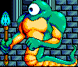
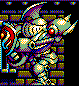

| 概要 | 情報 | アイテム一覧 |
| 敵キャラ一覧 | ボス戦 | ステージ一覧 |
| 攻略チャート | ぽっぷるメイル攻略へ |
| 1 | 2 |
リップの山のボス (妹らしい) まず、バウンドするボールを8つ程発生させて、姿を消します。ボールを全部 破壊するまではボスは出てきません。 次に変な球を落としながら空中を移動し、またバウンドするボールを発生して 姿を消します。基本的にこの繰り返しなので、落ち着いて対処しましょう。  この位置(ボスがバウンドするボールを発生させている真下)にいると、ボール に当たる心配はありません。 |
|
ラップの船のボス (姉らしい) 基本的に、リップの山のボスと同じ方法で勝てます。 この位置(ボスがバウンドするボールを発生させている真下)にいると、ボール に当たる心配がありません。 |
|
帝王 (これでもペンギン)  狙う場所は目です。 しかし、地上を氷の塊がせわしなく動き、ボスも目から変な球を連射してきます。 ほかにも地面の広範囲がダメージゾーンになるいやらしい攻撃もあります。 目を閉じることもあるので、長期戦を覚悟しましょう。 |
|
正面城壁のボス 一番前に突き出ている目を攻撃しましょう。 地面から牙みたいなものが時々突き出てくるので注意しましょう。 また、大量に魔法弾を飛ばしてくるので、頑張ってよけてください。 |
|
宝物庫のボス  顔を狙ってください。 剣を前に突きだして、電撃を放つ時が攻撃のチャンスです。 それ以外の時は、頑張って逃げ回りましょう。 |
|
地下迷宮のボス 主人公がボスの顔の真下にいる時のみ、腕を開き、顔を攻撃できます。 そして、それ以外はいっさい攻撃できません。 また、腕に触れると吹き飛ばされるので注意しましょう。 下に水を張っていない場所では攻撃を食らわないので、安全です。 |
|
宝玉宮のボス (ナッツ・クラッカー) まず、ロボットを破壊しましょう。 そうすると、ナッツ・クラッカーがぴょんぴょんとはね回ります。 しばらくそのままにしておくと、上からロボットの体が降りてきて、 もう一度ロボットを破壊しなければなりません。 また、バウンドするタルにも注意してください。 |
|
魔神の前座1 (ガウで戦う) 口からブレスを吐くと、長時間床が燃えるので気をつけましょう。 的が大きいので、できるだけ早く倒してしまいましょう。 誘導弾と直進する二種類の弾を使ってきますが、数が多く目が疲れ ます。 |
|
魔神の前座2 (神らしい) 火柱を上げる魔法、よく分からない魔法を連発してきます。 基本的に体の中心に攻撃を当てればいいです。 火柱が上がっている時に、真ん中に立っていれば攻撃のチャ ンスです。 |
|
魔神 最悪な敵です。 スタート時の数十秒間は攻撃することができません。 しばらくすると、鉄球付きの移動式足場が登場するので、その 上に乗って、攻撃の機会をうかがいましょう。 本当に嫌な敵です。 あらかじめ「ダガー」を装備しておくという戦法もあります。 (情報提供:てんたくさん) |
| 1 | 2 |
| 概要 | 情報 | アイテム一覧 |
| 敵キャラ一覧 | ボス戦 | ステージ一覧 |
| 攻略チャート | ぽっぷるメイル攻略へ |
ぽっぷるメイル
| 目次へ戻る | ページの上部へ |